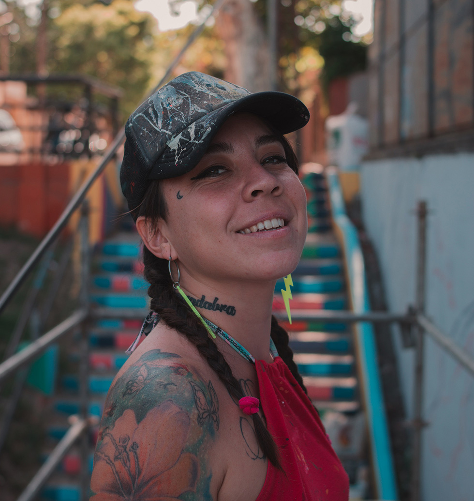

"En el muralismo encuentro una hermosa forma de transformar el mundo"
SOBRE MÍ

Mi nombre es Aymará, me dicen Aymi Lova.
Pinto en las paredes desde el 2015, gestiono proyectos culturales,
doy seminarios de muralismo y hace poco comencé a dar charlas de
gestión.
Formo parte de AMMURA Rosario, La Agrupación Mujeres Muralistas
Argentinas de la sede local.
En el muralismo encuentro una hermosa forma de transformar el
mundo.
Me gusta crear piezas únicas que despierten nuestra sensibilidad y
me gusta hacerlo cada vez en mayor escala!
SERVICIOS
MURALISMO
Noticias
Hace poco gané el Concurso All Stars Murals de Converse Argentina y pude unir en ese mural pintar en la calle a gran escala, dejar un mensaje de conciencia sobre nuestro ecosistema y hacer publicidad, todo en uno. Fue una gran experiencia, pinté un homenaje al Río Paraná, alas islas y a mi misma. Además ¡Pude usar mi talento natural para posar para las cámaras! Me encantaría que más empresas se animaran a hacer publicidad a la vez que potencian a los artistas urbanos.


Trabajos artísticos
Si hay algo que caracteriza mis obras son los colores, por lo demás soy bastante versátil. Mis obras buscan realzar la belleza, la identidad y el valor de los espacios, soy amante de los detalles, creo que ahí se encuentra toda la magia. Pinto tanto en espacios públicos como privados, mis obras se adaptan a empresas, negocios, bares, casas, edicios y me encantaría pintar un barco, amo los desafíos! También me gusta pensar los espacios de manera integral, no dudes en consultarme tu idea.


Festivales y Street Art
Me encanta pintar en la calle porque es enriquecedor lo que se comparte con las personas, sea contexto Festival o haciendo Street, me gusta aprovechar el espacio para dejar mensajes que nos sensibilicen con la espiritualidad, la naturaleza, el amor, la energía y la magia. Haciendo uso de la conciencia, el muralismo se convierte en una herramienta de empoderamiento personal, desarrollo y transformación socio cultural. Me encanta dar shows de pintura en vivo, los flashes y las luces! Creo que acompañan cualquier evento de una forma muy original. Hacen a lo inolvidable, a todos les encanta sacarse fotos en mis murales!


Colaboraciones
Hace unos años pinté el bowl de skate de la Plaza “27” junto con mi hermana Indira Sosa y sobre él hicimos una sesión de fotos para una feria americana que se llama Amelia del Mar. Para la campaña de Tuenti y Spotify en el Hell Track (bikepark) de la ciudad de Rosario, diseñé una consigna bien urbana vinculada a la música y el break dance, el mural además de ser una publicidad, convive perfectamente en el entorno. Me encantaría colaborar con marcas urbanas, tanto para hacer éste tipo de intervenciones como para hacer crear estampas en objetos diversos como una remera o un skate!


GESTIÓN CULTURAL
Proyectos urbanos
-
En la actualidad me encuentro gestionando un proyecto de base territorial que se llama
-
“Arte y Barrio Los Pescadores” junto a mi amiga muralista y arquitecta, Marina Aloe. Estamos realizando intervenciones artísticas urbanas a gran escala en el Barrio Los Pescadores para poner en valor su cultura y su identidad, a la vez que lo potenciamos como un punto turístico en la ciudad. El proyecto fue Declarado de Interés Municipal por el Consejo de Rosario.
-
“La Chicago” fue la 1er Semana de Arte Urbano de Rosario, cogestionado con Ariana Voh, lo realizamos en el histórico Barrio Pichincha, para resaltar su patrimonio cultural.


Seminarios y charlas
Cada día es más importante el rol de los artistas como
agentes activos de la cultura. Por eso me gusta dar clases e
inspirar a las personas a animarse, doy seminarios donde
inicio a las personas en el arte de pintar paredes y hace
poco comencé a dar charlas de gestión.
Lo que se aprende compartiendo no tiene comparación.